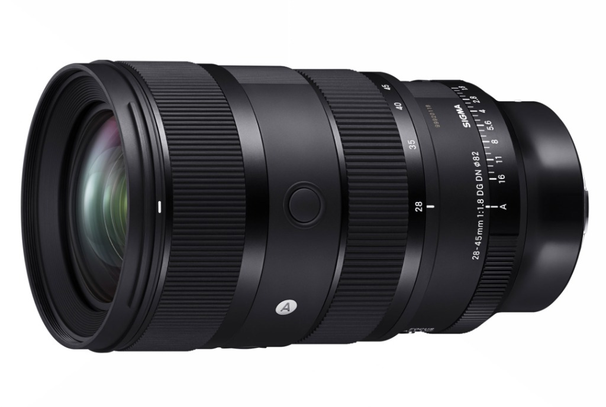
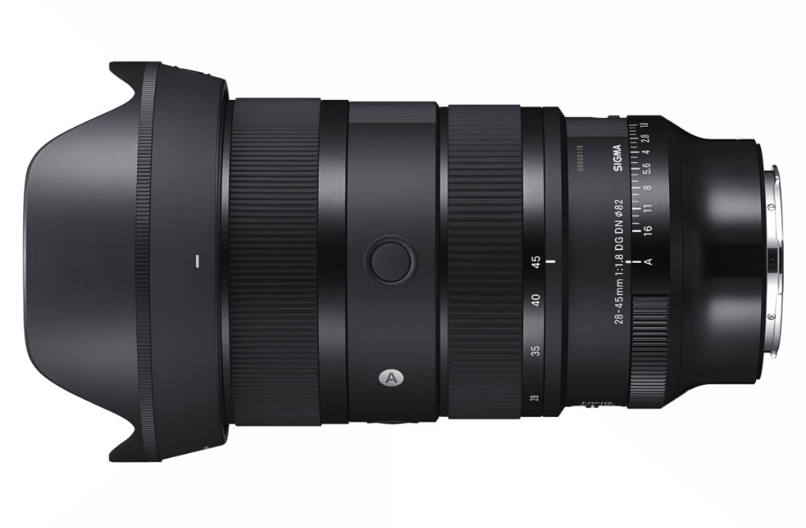

Sigma 28-45mm F1.8 DG DN Art
Uno zoom che si comporta come tre ottiche fisse
Quando Sigma ha presentato il Sigma 28-45mm F1.8 DG DN Art, il primo zoom al mondo per sensori full-frame con apertura costante F1.8, la reazione di molti è stata di pura curiosità mista a scetticismo: ha senso uno zoom con un'escursione focale così corta?
La risposta diventa evidente nel momento esatto in cui si smette di pensarlo come a un normale zoom e si comincia a guardarlo per ciò che realmente è: un set di tre ottiche fisse d'élite (28mm, 35mm e 45mm F1.8) racchiuse nello stesso barilotto.
A tutta apertura F1.8 la separazione dei piani e la capacità di raccogliere luce non hanno nulla da invidiare ai migliori prime lens dedicati della serie Art. Ho messo alla prova questo obiettivo in due contesti completamente opposti ma altrettanto esigenti: il wedding e l'astrofotografia di paesaggio. E proprio sotto il cielo notturno è successa la magia.

La meccanica dello zoom interno: dal video all'astroinseguitore
Una delle scelte ingegneristiche più raffinate di questa lente è il sistema di zoom interno (Internal Zoom): ruotando la ghiera da 28 a 45mm, la lunghezza fisica dell'obiettivo non varia di un solo millimetro e la lente frontale non si sposta.
Nel mondo del video e del gimbal questo è il requisito fondamentale per evitare di dover ricalibrare i motori di stabilizzazione a ogni cambio di focale. Ma c'è una seconda conseguenza fondamentale, di cui si parla pochissimo e che per me ha rappresentato una rivelazione: sull'astroinseguitore il baricentro rimane assolutamente immobile.
Chi fa astrofotografia sa quanto sia delicato bilanciare i contrappesi di una testa equatoriale o di un astroinseguitore portatile al buio, con il vento e a temperature sottozero. Con il 28-45mm F1.8 posso calibrare l'inseguimento a 28mm e poi stringere a 35mm o 45mm per isolare costellazioni o porzioni della Via Lattea senza toccare minimamente l'assetto meccanico.
📊 Tabella: Focali Chiave & Resa nel Doppio Utilizzo
| Focale | Angolo di Campo | Resa nel Wedding | Resa in Astrofotografia |
|---|---|---|---|
| 28 mm | 75.4° | Scorci d'insieme, balli e tavolate con stacco netto dei soggetti | Astrofotografia ambientata, arco galattico e paesaggio montano |
| 35 mm | 63.4° | La focale da reportage per eccellenza: naturale e tridimensionale | Inquadratura equilibrata di ammassi stellari e vette alpine |
| 45 mm | 51.4° | Ritratti a mezzo busto con sfocato burroso ed esaltazione dell'incarnato | Dettagli spinti del nucleo della Via Lattea e nebulose a emissione |
Nel wedding: il ritorno al movimento consapevole
Ho utilizzato il Sigma 28-45mm F1.8 durante diversi servizi matrimoniali. Dal punto di vista qualitativo la resa è sublime: contrasto delicato, plasticità delle figure e resa cromatica impeccabile sugli incarnati.
Ciò che cambia radicalmente è il modo di scattare. Con un'escursione così raccolta, non ci si comporta come con un classico zoom da reportage: non ti affidi pigramente alla ghiera, ma fai un passo avanti o un passo indietro. È la stessa disciplina e lo stesso ritmo che si adotta lavorando con le ottiche fisse, ma con la comodità insostituibile di avere tre lunghezze focali primarie nello stesso corpo macchina.

Astrofotografia: la resa del coma a F1.8 lungo tutto il range
È qui che il 28-45mm F1.8 ha superato ogni mia aspettativa. In astrofotografia di paesaggio poter lavorare a F1.8 significa raddoppiare la quantità di luce catturata rispetto a un classico F2.8, consentendo di dimezzare i tempi di posa o mantenere gli ISO su valori estremamente contenuti e puliti.
Ma la vera sorpresa risiede nel controllo del coma sagittale e dell'aberrazione cromatica a tutta apertura. Già a F1.8, sia a 28mm che a 35mm e 45mm, le stelle mantengono una puntiformità impressionante anche avvicinandosi ai bordi del fotogramma. Non c'è traccia di quelle sgradevoli deformazioni 'ad ali di gabbiano' tipiche di molti zoom aperti al massimo.
Poter comporre il cielo variando da 28 a 45mm con la sicurezza di una resa ottica da fisso premium a F1.8 regala una libertà creativa che nessun'altra lente sul mercato è in grado di offrire.


Peso, ingombro e logica di sistema
Con i suoi 960 grammi e un diametro filtri da 82mm, il 28-45mm F1.8 è un obiettivo imponente. Ma anche qui il giudizio cambia radicalmente se si valuta il sistema anziché il singolo oggetto.
Nelle mie sessioni notturne di astrofotografia mi muovo quasi sempre con l'auto in appoggio vicino ai punti di osservazione, quindi il peso sulle spalle per lunghe camminate non rappresenta un ostacolo. Inoltre, portare un singolo 28-45mm F1.8 evita di dover trasportare tre obiettivi fissi distinti (un 28mm F1.8, un 35mm F1.4 e un 50mm F1.8), azzerando il peso complessivo dei corpi multipli ed evitando il rischio di cambiare lente al buio tra polvere, gelo e condensa.
✅ PRO
- Apertura massima F1.8 costante: luminosità e stacco dei piani senza precedenti per uno zoom
- Controllo del coma straordinario a tutta apertura lungo tutte le focali
- Zoom interno (Internal Zoom): bilanciamento perfetto su gimbal e astroinseguitore
- Sostituisce tre ottiche fisse riducendo i cambi lente al buio o durante eventi
- Nitidezza e micro-contrasto di livello assoluto da centro a bordo
❌ CONTRO
- Escursione focale ridotta che richiede un approccio compositivo mirato
- Peso e dimensioni importanti (960g) poco adatti al trekking leggero
Conclusioni
Quando ho preso in mano per la prima volta il Sigma 28-45mm F1.8 DG DN Art pensavo fosse una lente sperimentale, destinata a una nicchia ristretta di videomaker o matrimonialisti esigenti.
Dopo averla utilizzata sul campo, e soprattutto dopo aver visto i file notturni sfornati a F1.8 su montatura equatoriale, posso dirlo senza esitazioni: è entrata a gamba tesa nel mio astro kit per restarci.
Se vuoi toccare con mano le sue prestazioni e capire come un F1.8 costante possa cambiare il tuo modo di catturare la notte o gli eventi, ti aspetto sul campo durante i miei prossimi workshop!